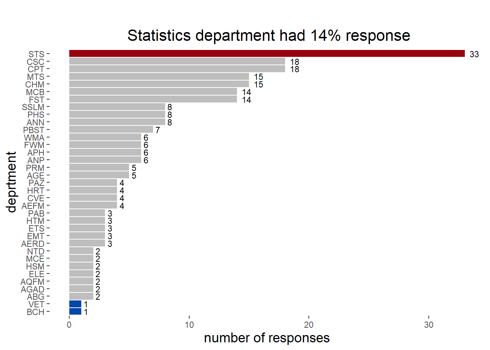

Depression and its Effect on FUNAAB student Academic Performance
Introduction
Depression prevalence varies among undergraduate students of different countries and cultures and is influenced by socio-demographics, interpersonal, intra-personal and environmental factors. This study aim to understand the state of depression and its effect on FUNAAB student’s academic performance.
Project Goals
The aim of this work is to explore the level of depression among undergraduates and its effect on their academic performance and also provide a simple guide on how to develop and use R shiny and Quarto application. Specifically, we aim to investigate:
The amount and causes of depression
The most significant factor using E.F.A and its effect on academic performance
Check the effect of depression, sex and gender on academic performance with ordinal Logistic regression
Build an interactive website using Quarto and R shiny to predict student academic performance and also educate the university community and the world.
Methodolgy
Population
Federal University of Agriculture Abeokuta (FUNAAB)
One of the three specialized Universities of Agriculture in Nigeria. It was established on January 1, 1988 with the triple mandate of teaching, research and extension (knowledge and technology transfer). Its covers a total land Area of about 10,000 hectares located in Odeda Local Government Abeokuta, Capital of Ogun State, Nigeria.
Data
A depression assssment questionaire was designed with Google forms and was distributed via social media to different college students, student leaders and unions, a total of 246 response was received, the data was stratified by gender and sample size of 118 was randomly selected. The information contained in the data includes socio demographic information, cgp, cgpa, sex, stress score, stress level e.t.c.
Data Cleaning
We begin by loading the raw data into R and performing some pre processing steps to prepare the data for analysis. First, we rename columns in the data set using the rename() function. Then, we reverse code likert items, convert columns to appropriate data types and other necessary data engineering techniques was applied before writing the clean data to file in a c.s.v. format. Click this link to access the data cleaning R script.
Demographic Statistics
Here we load the required packages by creating custom function using lapply for loading multiple names of packages created with c()
Analysis
Data Summary
| Name | df |
| Number of rows | 239 |
| Number of columns | 12 |
| _______________________ | |
| Column type frequency: | |
| factor | 10 |
| numeric | 2 |
| ________________________ | |
| Group variables | None |
Variable type: factor
| skim_variable | n_missing | complete_rate | ordered | n_unique | top_counts |
|---|---|---|---|---|---|
| age | 0 | 1 | FALSE | 3 | 18 : 165, 24 : 72, 30 : 2 |
| gender | 0 | 1 | FALSE | 2 | Mal: 135, Fem: 104 |
| college | 0 | 1 | FALSE | 10 | COL: 87, COL: 39, COL: 27, COL: 21 |
| department | 0 | 1 | FALSE | 35 | STS: 33, CPT: 18, CSC: 18, CHM: 15 |
| religion | 0 | 1 | FALSE | 3 | Chr: 202, Isl: 36, Oth: 1 |
| G.P.A | 0 | 1 | FALSE | 4 | 3.5: 125, 2.5: 71, 4.5: 35, 1.5: 8 |
| C.G.P | 0 | 1 | FALSE | 4 | 3.5: 116, 2.5: 92, 4.5: 23, 1.5: 8 |
| status | 0 | 1 | FALSE | 3 | Sin: 235, Coh: 2, Mar: 2 |
| sponsor | 0 | 1 | FALSE | 4 | Par: 208, Sel: 13, Gua: 12, Oth: 6 |
| stress_level | 0 | 1 | FALSE | 5 | Ver: 71, Maj: 59, Mil: 43, Ser: 34 |
Variable type: numeric
| skim_variable | n_missing | complete_rate | mean | sd | p0 | p25 | p50 | p75 | p100 | hist |
|---|---|---|---|---|---|---|---|---|---|---|
| level | 0 | 1 | 298.74 | 113.20 | 100 | 200 | 300 | 400.0 | 600 | ▇▇▇▂▁ |
| stress_score | 0 | 1 | 222.02 | 108.93 | 0 | 137 | 208 | 297.5 | 513 | ▃▇▆▃▁ |
Distribution of response
We proceed by exploring the distribution of response, counting and visualizing the number of response from each college and department of study.
Code
# Distribution of response by college
coll <-count(df,college)
plot1 <- ggplot(coll,aes(reorder(college, -n), y = n)) +
geom_bar( stat = "identity", fill = c(rep("grey",7),"#0047AB","grey","black")) +
geom_text(aes(label = n), vjust = -0.5, color = "black" , size = 5) +
labs(
subtitle ="",
x = "College", y = "number of responses")
ptheme <-theme(
panel.background = element_blank(),
plot.title = element_text(hjust = 0.5, size = 20),
plot.subtitle = element_text(hjust = 0.5, size = 16),
axis.title.x = element_text(size = 14),
axis.title.y = element_text(size = 14)
)
# count the category of each department
department <- count(df,department)
plot2 <-ggplot(department,aes(reorder(department, n), y = n)) +
geom_col(fill = c(rep("grey",9),"#0047AB",rep("grey",22),"#99020f","#0047AB","grey")) +
geom_text(aes(label = n), hjust = -0.5, color = "black", size = 3) +
labs(title = "",
subtitle = " Statistics department had 14% response",
x = "deprtment", y = "number of responses")
# display the plot
plot1+ptheme
Depression Level
Code
# Measuring the level of student depression
lvl <-count(df,stress_level)
plot2 <-ggplot(lvl,aes(x = stress_level, y = n)) +
geom_bar( stat = "identity", fill = c(rep("#666666",2),"#666666",rep("#99020f",2))) +
geom_text(aes(label = n), hjust = -0.5, color = "#99020f" , size = 5) +
labs(
subtitle ="",
x = "Depression Level", y = "number of students") +
theme(
panel.background = element_blank(),
plot.title = element_text(hjust = 0.5, size = 20),
plot.subtitle = element_text(hjust = 0.5, size = 16),
axis.title.x = element_text(size = 14),
axis.title.y = element_text(size = 14)
) + coord_flip()
plot2| Very little | Mild | Moderate | Serious | Major | |
| Female | 30 | 14 | 13 | 16 | 31 |
| Male | 41 | 29 | 19 | 18 | 28 |
Exploratory Factor Analysis
Exploratory factor analysis (EFA) was used to determine the common variance among the measured variables that can be attributed to a latent construct or factor. This helps to describe the data and identify underlying factors, this is the first step used to explore and reduce the number of variables into three group of factors namely interpersonal factor, interpersonal factor and environmental factor.
Ordinal Logistic Regression
An ordered logistic regression model was employed to examine the relationship between students’ G.P.A and several factors, including gender, depression level, interpersonal factors, and environmental stress. Prior to analyzing the data, we loaded the necessary packages and imported the dataset. Next, we redefined the levels of the categorical factors. To ensure randomness, we created a randomized copy of the data and drew a sample of 100 males and 100 females. Subsequently, we combined the two samples into a single dataset. From this combined dataset, we selected the variables of interest. To assess model performance, we split the data into a training set (80% of the data) and a test set (20% of the data). The model was trained using the training set, and its performance was evaluated using the test set.
Model Summary
The results of the model suggest that gender does not have a statistically significant impact on students’ G.P.A, as indicated by the coefficient estimate for genderMale (-0.215584, p-value: 0.5408). Among the stress levels, only stressMild showed a marginally significant negative association with G.P.A, with an estimated coefficient of -0.911112 (p-value: 0.1004).
The threshold coefficients represent the cutoff points that differentiate different classes of G.P.A. For instance, the threshold between “First class” and “Second class” is estimated to be -2.3383, while the threshold between “Second class” and “Second class lower” is 0.4869. Additionally, the threshold between “Second class lower” and “Third class” is estimated to be 4.1911.
Here is an interpretation of the effect of each predictor based on the provided coefficient estimates:
genderMale: The coefficient estimate of -0.215584 suggests that being male is associated with a slight decrease in the odds of having a higher C.G.P, but the effect is not statistically significant (p-value: 0.5408). In other words, gender does not have a significant impact on the students’ G.P.A.
stressMild: The coefficient estimate of -0.911112 indicates that experiencing mild stress is associated with a decrease in the odds of having a higher C.G.P. However, the effect is only marginally significant (p-value: 0.1004), suggesting that the relationship between mild stress and G.P.A needs further investigation.
stressModerate: The coefficient estimate of -0.153460 suggests that moderate stress does not have a significant impact on students’ G.P.A, as the effect is not statistically significant (p-value: 0.7855).
stressSerious: The coefficient estimate of 0.418785 indicates that experiencing serious stress does not have a statistically significant effect on students’ G.P.A (p-value: 0.4744).
stressVery little: The coefficient estimate of -0.207082 suggests that experiencing very little stress does not have a significant impact on G.P.A, as the effect is not statistically significant (p-value: 0.7320).
f1, f2, f3 (categorical factors): The coefficient estimates for the different levels of these factors (f1.L, f1.Q, f1.C, f1^4, f1^5, f2.L, f2.Q, f2.C, f2^4, f3.L, f3.Q, f3.C, f3^4, f3^5) indicate the relationship between each level of the factors and G.P.A. However, none of these coefficients are statistically significant, suggesting that these factors do not have a significant impact on G.P.A. and may need further investigation.
Overall, the coefficient estimates provide insights into the relationships between the predictor variables (stress and gender) and the log-odds of the ordinal response variable (C.G.P). However, it’s important to consider statistical significance when interpreting the coefficients. In this case, the p-value is 0.2235, suggesting that the difference is not statistically significant at a conventional significance level (e.g., 0.05).
However several model was trained with different factors combinations and their prediction performance record as below
model1 with f1, f2 and f3 predicts 50% C.G.P correctly
model2 with stress predict 41% C.G.P correctly
model3 with f1, f2 ,f3 and stress predicts C.G.P 41% correctly
model4 with f1, f2 ,f3, stress and gender predicts C.G.P 41% correctly
model5with f1, f2 ,f3 and gender predicts 47% C.G.P correctly
model6 with f2 predict 48% C.G.P correctly
model7 with f1 predicts 41% C.G.P correctly
model8 with f3 predicts 47% C.G.P correctly
The best model in this case is model 1 with 0.5 error classification rate
This finding supports the notion that model1 captures important patterns and dependencies between the predictor variables and the response variable also having the least prediction error rate which indicates strong evidence against the null hypothesis of no association. Therefore, we can reject the null hypothesis and conclude that there is a significant relationship between the observed and predicted values of the response variable.
We also see that the study reveals the following
-
Stress Levels:
Individuals with a mild stress level have lower odds of the response variable compared to the reference category.
Moderate and very little stress levels do not show significant evidence of a difference in odds.
Individuals with a serious stress level have slightly higher odds of the response variable, although not statistically significant.
-
Gender:
- Being male is associated with slightly lower odds of the response variable, but it is not statistically significant.
-
Thresholds:
The odds of transitioning from the first class to the second class are very low.
The odds of transitioning from the second class to the second class lower are relatively high.
The odds of transitioning from the second class lower to the third class are significantly higher.
Summary
Out of all the 246 students who participated in the study, 93 students suffers major depression while 153 shows no sign of major depression, the result also confirm that interpersonal, interpersonal and environmental stress factors does affect students academic performance in FUNAAB, which is supported by the fact that model1 using f1 , f2 and f3 as predictors captures important patterns and dependencies between the predictors and the response variable and also having the least prediction error rate which indicate a strong evidence against the null hypothesis of no association. We conclude that FUNAAB students academic performance is a function of three main factors ( Interpersonal, Intrapersonal and Environmental ).
Conclusion and Recommendation
There is a need for creating a self care routine and priorities schedule activities that assess student mental health like one on one anonymous online counselling , psychotherapy and also increase awareness on the usefulness of R Shiny and Quarto packages for the development effective knowledge-sharing platforms that can ultimately foster collaboration, accessibility and insights across various domain in Nigeria and the world, these open source materials are highly recommended as a teaching tool for all statistic related and research work at all tertiary levels.
R Shiny & Quarto
Shiny is an R package that makes it easy to build Interactive web applications (apps) straight from R without using any web application language such as HTML, CSS, or JavaScript knowledge while Quarto is an open source scientific technical publishing system.
Future Work
Possible future work for this project includes:
Investigating the effects of other mental health disorders on academic performance
Exploring the impact of academic performance on mental health
Conducting a longitudinal study to track changes in depression symptoms and academic performance over time and many more
Sidenote
To find all the R codes and datasets, visit my GitHub repository.